Personal project
16 ft Wooden Catamaran
Length: 16 ft · Construction: stitch-and-glue okoume plywood / epoxy · Rig: assembled from parts — a $200 scrap Hobie 16 supplied rudders, hardware and trailer; mast bought used in Texas; sails (no. 19716) used off a sailing forum; standing rigging and chainplates off eBay; boom self-built in wood · Weight: ~250–300 lb (estimated) · Cost: ~$4,200 · Tools: Fusion 360 · Duration: Nov 2017 – Jun 2020 (~10 months of working time) · Status: Completed June 2020; sailing since July 2020

A self-directed design-and-build project: a 16-foot catamaran adapted from a 20-foot design, built in okoume plywood and epoxy around a second-hand Hobie 16 rig.
Background
I wanted a catamaran for two reasons that pull in opposite directions. One is stability — a cat is a forgiving platform for people who aren't sailors, and I wanted something friends could get on without a briefing. The other is that I wanted to fly a hull. Sailing a catamaran hard enough to lift the windward hull clear of the water is the thing that makes them worth having, and it is the opposite of a stable ride.
I had sailed a Hobie 16 that needed a lot of work, which is where the interest came from. The obvious move was to buy one. I looked at what was available and didn't like how any of it looked, which is not an engineering reason but is an honest one — this was a project I was going to spend years on, and I wanted to want to look at it.
So I went looking for a way to build one instead, and found a construction method for a plywood catamaran built around a 20-foot hull. I wanted 16 feet. Adapting that design became the first engineering task of the project, before any material was bought.
Boatbuilding is well outside my day-to-day engineering work. Most of what follows was learned from published sources, from a stack of books on boat design and wooden construction, and from getting it wrong the first time.
Adapting a 20 ft Design to 16 ft
Scaling a boat down is not a matter of multiplying every dimension by 0.8.
I shortened the length and deliberately did not reduce the hull height. Cutting a hull's depth along with its length removes buoyancy fast, because displacement scales with all three dimensions at once, and a 16-foot cat carrying two or three people needs the volume. Keeping the section depth while shortening the boat gives up some slenderness in exchange for reserve buoyancy, which is the right trade on a boat that will be sailed with crew and will occasionally bury a bow.
There was a second constraint pushing the same way, and it came from the material rather than the hydrostatics.
Both sides of one hull have to come out of a single scarfed sheet — roughly 16 ft long by 4 ft wide once two 8 ft sheets are joined end to end. That gives about two feet of height for each hull side, with the mirrored panel nesting in the other half of the sheet. Any hull deeper than that needs a third sheet per hull, and at $70 a sheet plus $150 shipping, a third sheet is not a rounding error.
So the hull depth was bounded above by the plywood and below by the buoyancy I wanted to keep. The design sits between those two.
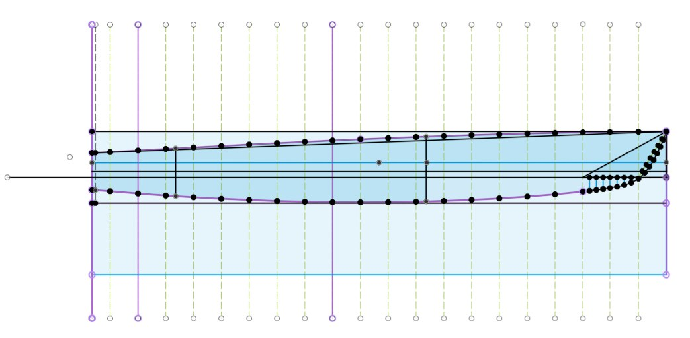
Designing to a Fixed Rig
The single most consequential decision was made before any wood was cut: rather than design a sail plan, I acquired an existing one.
In October 2018 I bought a non-repairable Hobie 16 — with its trailer — for $200. The hulls were beyond saving. The mast was bent. The sails were tattered. There was no boom at all.
That is not a boat purchase; it is a parts purchase. For $200 it delivered rudders, deck hardware, trampoline fittings, a road trailer, and — most importantly — a complete, proven set of rig dimensions to design around. A trailer alone, bought separately, would have cost several times that.
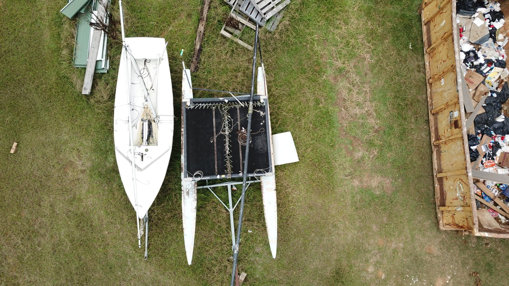
What had to be replaced
Buying a wreck means inheriting its faults, and two of them determined later work:
- The mast was bent, so I bought a replacement off Craigslist in Galveston, Texas, and drove there and back from Madison, Mississippi in a single day.
- There was no boom, which is why the boom on this boat is one I built. A wooden spar was not a stylistic flourish; it was the cheapest way to replace a missing part.
- The sails were tattered, so a used set was bought off a sailing forum — the suit carrying number 19716 that the boat sails under today.
- The standing rigging was not worth reusing, so the shrouds and forestay were bought off eBay, as were the chainplates.
The replacement mast came with its masthead, so the top of the rig needed nothing further.
So almost nothing in the finished rig came off the donor. The mast is from Texas, the sails from a forum, the wire from eBay, the boom from my own shop. What the $200 actually bought was the rudders, the hardware, the trailer, and the specification — a known-good set of dimensions and loads to design a platform around.
That pattern is worth naming. Nothing in the rig was designed; everything was sourced against a known standard. The Hobie 16 has been in production long enough that its parts are a commodity market — a bent mast, a missing boom and dead wire are all solvable from second-hand listings, because thousands of the same boat exist. Designing to a mass-produced rig buys a supply chain, not just a sail plan.
What the fixed rig buys and costs
What it buys is a sail plan already known to work: the Hobie 16 carries roughly 218 sq ft between main and jib on a 26 ft 6 in mast, a combination sailed and refined for decades, so the aerodynamics need no validation.
What it costs is design freedom. Every load path is now dictated by hardware I did not design and cannot change — chainplate positions, mast step location, shroud angles, and the compression and righting-moment loads the rig imposes are all fixed inputs. In practice this inverted the usual design order: instead of sizing a rig to a hull, I was sizing hulls and crossbeams to a rig.
Before committing, the rig was stepped in the backyard and the mainsail hoisted, to confirm the spar was straight, the rigging serviceable, and the dimensions matched what the platform was being drawn around.

Buying an old mast on purpose
The replacement mast is pre-1980 and entirely aluminum, and that was deliberate.
Hobie later changed the 16's mast so the upper section is composite rather than aluminum, following incidents in which masts contacted overhead power lines. The safety case for that change is obvious. The durability consequence is that the top third of a later mast is a composite section living in full sun for its whole life, and UV is the one thing that reliably degrades it.
An early all-aluminum spar has no such section. It is heavier and it conducts, but it does not care about sunlight. Knowing why a product changed lets you choose which version's tradeoffs you want.
Learning the Tools
Nothing in this project used a skill I already had.
I learned 3D modelling and Fusion 360 for this boat. The hull panel development, the offset tables, the nesting check against sheet stock, the structural interfaces, the mast simulation, and a marquetry inlay pattern were all done in a package I did not know how to open in November 2017.
The domain knowledge came the same way — a stack of books on boat design, wooden construction, and small-craft structure, read specifically because the project required them. Species selection came out of the wood characteristics tables in Boatbuilding With Plywood; the construction method came from published plans for a larger boat.
That is worth stating plainly rather than hiding. The interesting question about an engineer is rarely what they already know. It is what happens when a project requires something they don't.
Materials Selection: Why Wood
Wood is an unusual choice to defend to an engineer, so it is worth showing the reasoning rather than asserting the conclusion. The relevant comparison is not strength but bending stiffness per unit weight, because a hull panel is a panel in bending, and on a small beachable catamaran weight is the dominant performance variable.
Compared on panels of equal bending stiffness, plywood is extraordinarily competitive:
| Material | Relative weight | Relative thickness |
|---|---|---|
| Steel | 1.00 | 1.00 |
| Titanium 6Al-4V | 0.65 | 1.22 |
| Aluminum | 0.48 | 1.44 |
| Magnesium | 0.36 | 1.66 |
| Aramid / epoxy | 0.31 | 1.88 |
| E-glass / epoxy | 0.55 | 2.29 |
| 5-ply Douglas fir | 0.21 | 2.97 |
| Aramid / foam sandwich | 0.19 | 3.77 |
Panels of equal bending stiffness, normalized to steel
Plywood reaches 0.21 relative weight — beaten only by an aramid/foam sandwich at 0.19, and beating aluminum by better than a factor of two. The tradeoff is thickness: getting there requires a panel roughly three times as thick as the steel equivalent, which costs interior volume and adds wetted surface at the panel edges. On a boat with hulls this slender that was an acceptable price.
The rest of the case is practical rather than analytical. Plywood and epoxy need no autoclave, no vacuum infusion, and no mold tooling; the entire structure can be built in a garage with clamps, a jigsaw, and a mixing pot. For a one-off with no production run to amortize tooling against, composite construction would have cost more in setup than the material savings would ever return.
Two materials, two jobs
Skin and structure have opposite requirements. A hull skin wants to be as light as possible while remaining stiff enough not to oil-can between frames; a structural member wants strength and the ability to hold a fastener under load. No single species is best at both, so the boat uses several, each where it earns its weight:
| Where | Material | Why |
|---|---|---|
| Hull skins | Okoume marine plywood | Light, thin, takes compound curvature |
| Internal framing | Douglas fir | Available, good strength for weight |
| Crossbeams and arch | Douglas fir, laminated | Stiffness per pound over a span |
| Corner posts | White oak | Hard and tough; holds a bearing surface under a bolt |
| Decks | Cedar strip | Follows tight curvature; appearance |
| Pylons and receivers | Aluminum tube | Wear surface at a demountable joint |
Plywood Specification
The hull skins are gaboon (okoume) marine plywood, Lloyd's Register approved, manufactured by Compensato Toro S.p.A. The certification matters more than it might appear: marine-grade plywood is a claim anyone can print on a label, whereas Lloyd's approval requires a fully waterproof adhesive to a defined standard and a veneer grade with no interior voids. A void inside a laminate is invisible from the outside, becomes a water trap once the panel is drilled or the edge is opened, and is the usual first cause of delamination in a wooden hull.
The epoxy is West System resin with 206 slow hardener. Hardener speed is a real decision rather than a default in this climate: in a Mississippi garage in summer, standard hardener can begin to gel in the pot before a large panel is wet out, and once that starts there is no recovering the batch. Slow hardener trades working time for cure time, which is the right trade when the panels are 16 ft long and the alternative is throwing away mixed epoxy.
Three-ply, equal layers
The hull skins were specified as 4 mm three-ply, with all three veneers the same thickness.
Both parts of that specification do work. Equal layer thickness makes the panel balanced and symmetrical about its own centreline — the same amount of wood, running the same direction, at the same distance either side of the middle. An unbalanced layup moves as it takes up and gives off moisture, because the two faces respond differently and the panel cups toward the drier side.
Three plies rather than five is a stiffness decision. In a three-ply panel the two outer veneers run the same direction and only the core runs across, so about two-thirds of the material lies along the face grain. In a five-ply panel of the same thickness, only three-fifths does. Since bending stiffness depends on how far material sits from the neutral axis, and the outer layers are exactly the material furthest out, putting both faces along the length of the hull buys the most stiffness available at that thickness.
The trade is directional. A three-ply panel is markedly stiffer and stronger along its face grain than across it, and it is more willing to split when bent hard the other way. That is an acceptable trade on a hull skin, where the loads and the curvature both run predominantly fore and aft.
All of which assumes the plies are actually equal. On the first two hulls they were not, and that is the subject of the iteration section below.

Panel Preparation: Scarf Joints
The hulls are 16 ft long. Plywood comes in 8 ft sheets. Every hull panel therefore had to be joined before it could be cut to shape, and the joint had to be as stiff as the panel around it — a butt strap would have created a hard spot exactly where the panel needs to bend fair.
The solution is a scarf joint: both sheet ends are planed to a long feathered taper and bonded with epoxy, producing a glue line many times the panel thickness in length and a joint that flexes with the surrounding wood instead of resisting it. The tapers were cut with a scarfing tool rather than by hand.
Where the scarfs land matters as much as how they are cut. Stagger them too close together and the panel has a locally thick, stiff region where two joints overlap. Space them too far apart and there is a band of panel that is all joint and no continuous face veneer — a weak line running across the sheet. Neither shows up until the panel is bent.
Clamping pressure came from free weights laid along the joint. That sounds improvised, and it is, but the requirement is genuinely modest: an epoxy scarf needs even, light contact pressure, not the high clamping force a mechanical fastener joint would demand. Squeezing an epoxy joint too hard starves it of adhesive and makes it weaker, not stronger.

Lofting and Panel Development
Hull panel shapes were developed from a table of offsets — a datum line with points marked above and below it at each station — worked out on paper and then rebuilt in Fusion 360.
Station spacing is not uniform, and that is the point. Where the panel edge curves hard, points sit roughly every two inches; through the long middle where the curve is nearly straight, they open out to about a foot. Offsets are a sampling problem: you need enough points to define a curve, and sampling a straight line densely buys nothing. Concentrating resolution where the second derivative is large is the whole technique.
Battens were sprung through the marked points to fair the curves before cutting, which is the analogue check no table of numbers gives you — a batten will not pass through a mistake.
The CAD model also carried the actual plywood sheet outline, so the nested panel could be checked against real stock before anything was cut. At roughly $300 of plywood per hull delivered, confirming the shape fits on the sheet in software is the cheap version of finding out with a jigsaw.

Stitch-and-Glue: Locking the Keel First
The construction method is a variant of what is generally called tortured ply: rather than building a hull over a mould, you cut flat panels to a developed shape, join them at the keel, and force the assembly into three dimensions. The shape comes from the panel geometry and the angle you open the keel to, not from a form.
That makes the keel angle the master variable. Opening the keel wider at a station forces a harder bend into the panels there, so the angle set along the length determines where the material is worked hardest. On this hull the greatest bend is at the stern, where the sections are fullest; the bow is fine and needs comparatively little.
The sequence matters more than it first appears, and it runs in an order that surprised me:
- Stitch the two panels together along the keel with copper wire
- Set the keel angle along the full length
- Fillet and glass the inside of the keel seam; let it cure
- Flip the assembly, cut out the copper stitches, sand the seam fair
- Glass the outside of the keel
- Gunwales glued on
Only then is the hull bent to shape.
Stitches were bent by hand from copper wire. Copper is soft enough to twist tight without work-hardening and snapping, and — unlike steel — anything left embedded in the laminate will not rust and stain through the finish later.

Glassing the keel before forming has a consequence worth naming. Once that seam is cured both sides, the spine of the hull is rigid and the keel angle is no longer negotiable. Every bit of strain the forming operation demands has to be absorbed by the panel between keel and sheer. Nothing can relieve itself by opening slightly at the centreline. The wood either takes it or it fails.

Forming the Hulls
With the keel locked, the hull has to be persuaded from a flat-ish stitched assembly into its finished section. The photographs make the magnitude clear better than any description: a flat sheet ends up wrapped into something close to a closed circle.

The first attempt, and what it taught
The first hull was formed with cold water from a garden hose. Everything I had read said the bend would be difficult but that the plywood would take it, so the panel was wetted down and the straps drawn in.
It did not get halfway before it let go. The failure was sudden and complete — not a crack to be repaired but a hull that was finished as a structure. An attempt was made to save it by building a form for it to close onto. That failed too, and the hull was scrapped.
The method that worked
The process that eventually worked uses heat and moisture together, and both parts are necessary:
- Cam straps fitted along the full length at roughly one-foot spacing
- Hull turned upside down
- Covered in towels
- Boiling water poured over it, repeatedly
- Straps drawn in progressively, measuring as the section closes
- Towels off, hull flipped upright and lowered into the work table
- Straps released — the table now holds the shape
Wood's stiffness comes largely from lignin in the cell walls. Lignin softens with heat, but the temperature at which it begins to yield drops substantially once the wood is wet. Heat and moisture together let the cell walls deform plastically instead of fracturing. This is the mechanism of steam bending, delivered with a kettle and a pile of laundry instead of a steam box.
The towels are not incidental. They hold a reservoir of water against the panel so it stays saturated, and they insulate it so it stays hot between pours. A bare panel splashed with hot water is cool and drying within a minute.
Strap spacing is the other half of it. A few widely spaced straps pull the hull in at isolated points, and each of those points is a local strain concentration — a hard spot, and hard spots are where cracks start. Straps at one-foot intervals turn a set of point loads into something much closer to a distributed one.
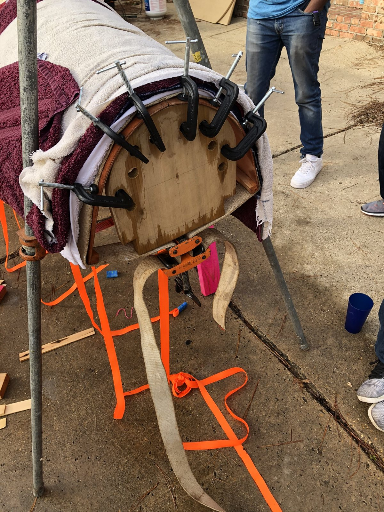
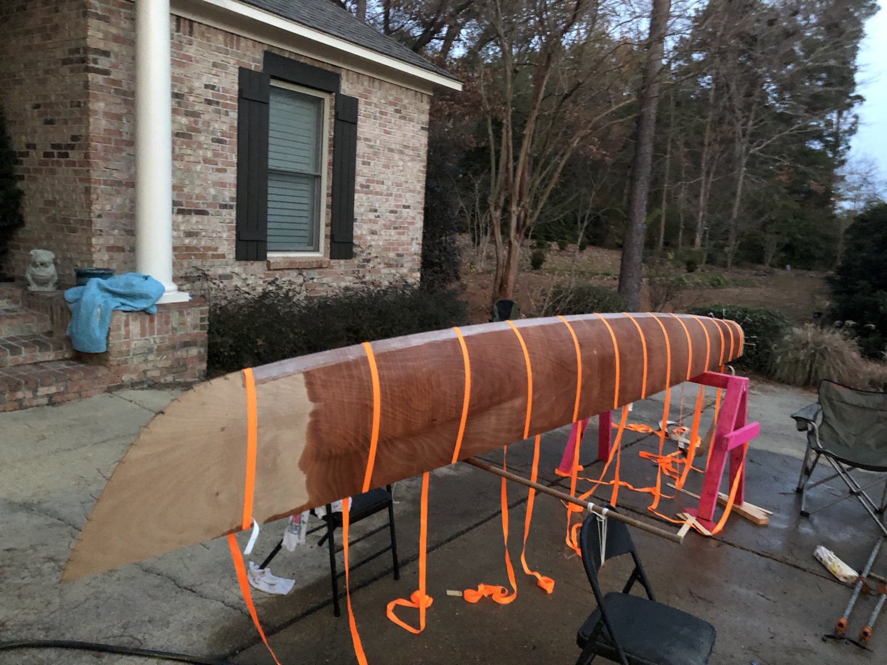
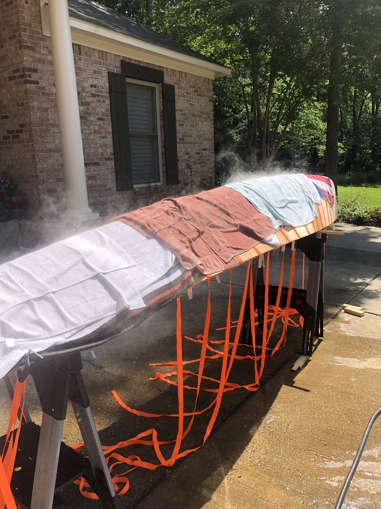
The work table
The shape is not held by the straps. It is held by a full-length work table with the hull's deck outline cut into it, built before the first hull was even attempted.
The hull is lowered into that opening, and the table edge holds the sheer line at the correct plan shape at every station along the length. One piece of tooling gives correct beam, a fair sheer over sixteen feet, and an open interior to work in — and because the opening is the deck outline, anything formed in it will match the deck cut to the same shape.
Straps visible in the table photographs are doing nothing structural. They are stopping a hull falling out of a hole.
Once in the table, permanent cross members go in — straight members pulling the gunwales together at roughly one-foot spacing. With those bonded, the hull holds its own shape and the table has done its job.
The Iteration Story: Three Hulls
The specification was correct. The material was not.
What arrived
The skins were ordered as 4 mm three-ply okoume with three equal plies. What the first supplier delivered was 4 mm three-ply okoume in which the core made up roughly 60% of the thickness and the two face veneers about 20% each.
Nominally the same product. Structurally a different panel — and there is no way to see it from the face of a sheet.
Why the ratio matters more than the thickness
Surface strain in a bent panel is set by thickness and bend radius alone, so both layups strained their outer faces identically. The difference is where the weak material sits.
In three-ply construction the core runs across the grain, and wood loaded across the grain fails at a small fraction of the strain it tolerates along the grain — a difference of more than an order of magnitude. The core is therefore the panel's weakest material in a bend, and how much trouble it causes depends on how far from the neutral axis it extends, because strain grows linearly with distance from that axis.
In a 4 mm equal layup the core spans roughly ±0.67 mm about the centre. In the 60/20/20 stock it spans ±1.2 mm. At the same bend radius, the cross-grain core in the delivered material saw close to twice the strain — and it was the material least able to take it.
The failure follows from there. The core cracks internally first. Once it has split, the two face veneers are no longer shear-connected through the middle, so the panel stops behaving as a single stiff section and becomes two thin skins working independently.
The cost, in hours
| Material | Time to form a hull |
|---|---|
| 60/20/20 layup (first supplier) | ~10 hours |
| Equal three-ply (second supplier) | ~1 hour |
Same nominal thickness, same species, same radius, same technique.
The three attempts
Hull one cracked during forming and was scrapped.
Hull two was built from the same stock, had the same problem, and was coaxed into shape over about ten hours rather than discarded.
Hull three was built from a second supplier's plywood with genuinely equal plies. It came to shape in a single cycle of about an hour — fast enough to be startling after the previous experience. We had braced for another full day of fighting it and instead bent it into a straw.
That third hull is what confirmed the diagnosis. Until then the ply ratio was a hypothesis; the one-hour bend made it a conclusion. All the reading that said the bend would be difficult but manageable had been accurate — it was describing plywood I did not have.
The boat carries one of each
The finished boat is hulls two and three.
The two hulls are therefore not the same laminate. Port and starboard have different ply ratios, different bending histories, and one of them has an oversized cross-grain core that was worked hard to get it to shape. It has held up in service, but it is the part of the structure I would inspect first.

The location is worth noting. The cracks run out from a glass-taped edge, and taped seams do not bend. The panel immediately beside one has to absorb the curvature the tape refuses, which makes that line a stiffness discontinuity and therefore a strain concentration — the same category of problem as a widely spaced strap, arriving from the opposite direction.
Internal Structure
The hulls are not bare stitched shells. Each carries permanent transverse cross members at roughly one-foot spacing, tying the gunwales together and holding the section, with the internal framing in Douglas fir.
Beyond that, bulkheads were built from rigid XPS foam board coated in epoxy, adding stiffness and reserve buoyancy that does not depend on the hull staying watertight. On a boat that will eventually be capsized — and every beach cat is, sooner or later — buoyancy built into the structure is the difference between a boat you right and sail home and a boat you swim away from.
In retrospect this is the part I would change. Epoxy over bare foam produces a hard skin with no fibre in it. It resists dings and it seals, but structurally it is not doing much: the stiffness of a foam-cored panel comes from its skins, and a neat epoxy coating is a poor skin. Either glass both faces and get a genuine sandwich, or use a different approach entirely.
What I would build instead is a light lattice of ¾ in Douglas fir — sticks in tension and compression carrying load into the hull skin, in a material with properties I can look up, for comparable weight.
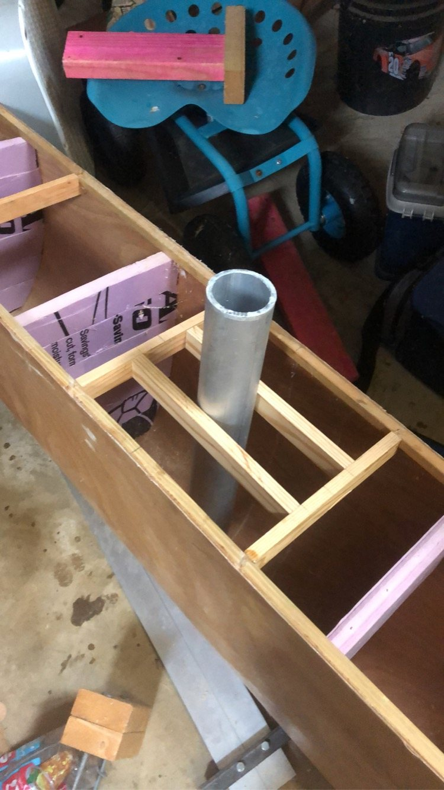

Sheathing
Once formed and framed, the hulls were turned upside down and sheathed in fiberglass cloth wetted out with epoxy over the entire exterior, rather than only taping the seams. This happened before the frame was built and long before the decks went on — the hulls were sealed and protected through everything that followed.
Full sheathing costs weight and a great deal of sanding, and it is genuinely optional. The argument for doing the whole hull is abrasion and water. This is a beach-launched boat that will be dragged onto sand and ramps, and the loads that damage a plywood hull in service are rarely the sailing loads; they are the grounding, the trailer bunk, the dropped anchor. A glass skin takes that damage in a material that does not care about it, and it puts a continuous water barrier over every panel, every seam, and every end grain at once.
The hulls carry 6 oz cloth; the decks later carried 4 oz. Using two weights is a deliberate split. The hulls are what gets dragged up ramps and grounded on whatever is under the water at a launch site, so the skin there is chosen for abrasion resistance. The decks see feet and gear — and they are the surface people look at. Lighter 4 oz cloth wets out clearer, drapes more easily over strip planking without bridging, and adds less weight high up, which on a catamaran costs righting moment at a poor lever arm.

The Platform
The frame is the part of this boat with no plan behind it. It is entirely my own design.
Most plywood catamaran designs mount the crossbeams flush — the beams sit directly on the hull decks, and the crew rides low and close to the water. I did not want that. The Hobie 16 carries its platform raised well above the hulls, and that is the boat I liked. Choosing a raised platform meant every load path underneath it had to be worked out from scratch, because there was nothing to copy.
Materials, by job
The platform is a rectangle: two crossbeams athwartships between the hulls, two straight rails fore and aft, with the trampoline laced inside the frame.
Douglas fir makes the beams and rails — good stiffness per pound over a span. White oak makes the four corner posts, where a large hole is bored through to take an aluminum sleeve that drops over the hull pylon. That corner is doing bearing work: a bolt and a tube loading wood across its grain, repeatedly, for years. Oak is hard and tough enough to hold a bearing surface where fir would crush.
The members meet at the corners in a castle joint — an interlocking joint in the Japanese joinery tradition that locks the members together in all directions rather than relying on fasteners to carry the geometry.
The forward arch
The forward crossbeam is an arch, not a straight beam, because it carries the mast.
It is a laminated member: four boards of Douglas fir bent over a purpose-built jig and epoxied in pairs, then the trampoline channel routed, the depth hand-fitted, the whole thing dry-clamped and tested, and only then glued as a set. Laminating rather than sawing the curve out of solid stock keeps the grain running continuously around the arch instead of cutting across it at the ends, which is where a sawn curve fails.
The tie rod
An arch under a central load pushes its feet apart. Left unresisted, that thrust has to be taken by the corner joints and ultimately the pylons, loading them sideways in exactly the direction they are worst at.
So the arch has a stainless steel cable running across its base from foot to foot. The cable takes the spreading force in pure tension, converting the arch from something that shoves outward on everything it touches into a self-contained unit that carries its load straight down. The Hobie uses a solid steel rod for the same job; cable was cheaper, lighter, and tensionable.
The mast post carries a steel rod through the crossbeam, and the cable runs through the base of it. Tensioning the cable therefore does two jobs at once: it preloads the arch so it is not waiting for the rig to load it before the tie comes tight, and it pulls the mast post up into the beam. The mast is clamped into its seat by the same tension that stops the arch spreading.
This is the tie beam, which has been holding up roofs for several centuries. It was satisfying to arrive at it from the load path rather than from having seen one.
Trampoline attachment
The trampoline is a Hobie 16 tramp, and it laces into a channel routed along the inboard edge of the beams, sized to take its bolt rope. Designing to accept a mass-produced part means the tramp can be replaced from stock for the life of the boat rather than being a bespoke item to remake. Channel depth was tested before committing: too shallow and the rope pulls out under load, which on a trampoline carrying three people is not a cosmetic failure.
I misrouted one section. Rather than rebuild the beam, the bad length was cut out and a new piece epoxied in — a repair that is visible if you know to look for it, and which saved a laminated member that had taken a day to make.
One front corner does not line up with the arch as cleanly as I would like. It is cosmetic and it is structurally sound, but I know exactly where it is.
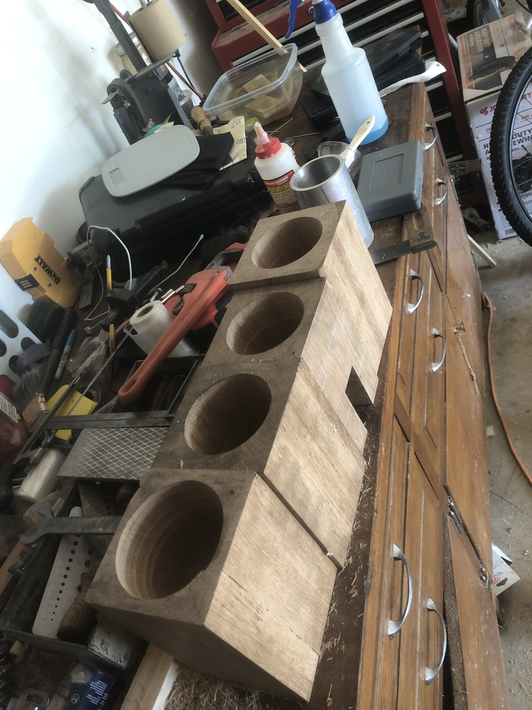
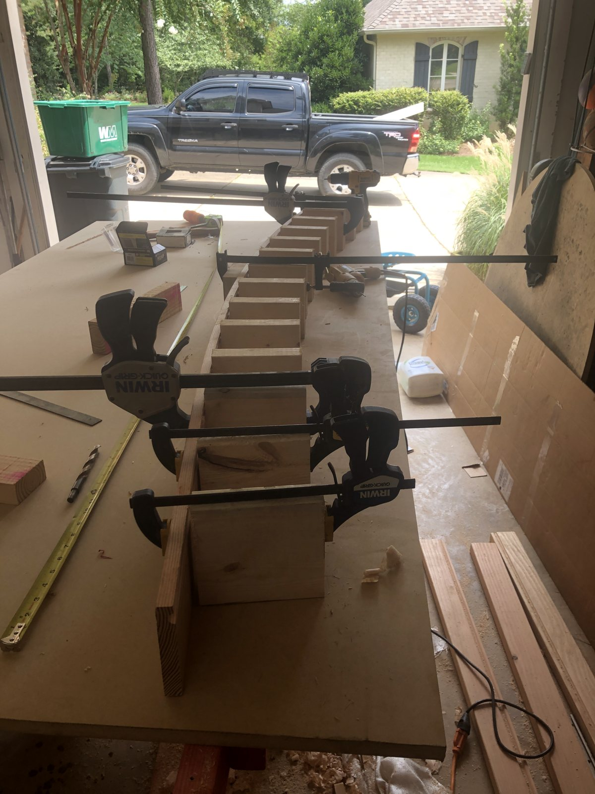

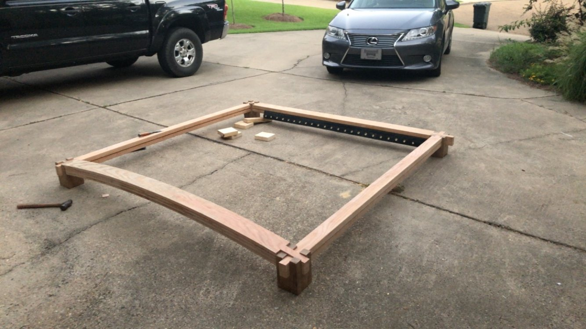


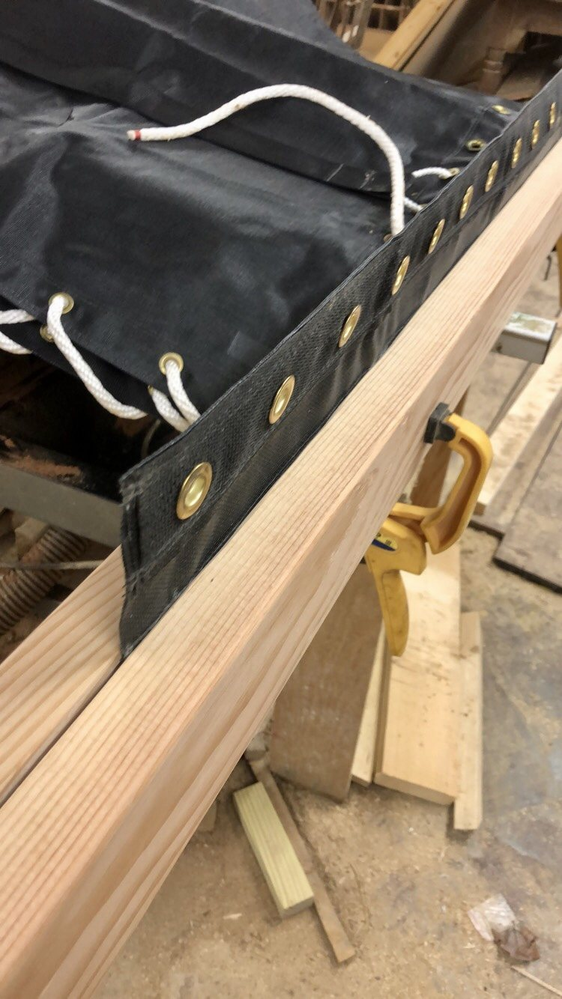

Structural Interfaces: Getting Load Into the Hulls
The platform connects to the hulls through four aluminum pylons, each dropping into a receiver built into the hull structure. That makes the boat demountable — the beams lift off, which matters for a trailered boat assembled at the ramp and stored in a garage that has to be emptied to work in.
Aligning by assembly rather than measurement
The pylons were not fitted to the hulls and then hoped to match the frame. The order was the reverse.
Pylons were placed loose in the hulls, unsecured. The frame was then built around them, and set down onto them to establish the true positions and angles. Only once everything sat correctly were the pylons locked in.
That makes the frame the alignment jig for its own mountings. Given that each hull is a separately built wooden object, with its own forming history and its own tolerances, this is the only approach that gets four pylons to line up with four receivers reliably. Measuring each hull independently and trusting the numbers to agree would have been optimistic.
The pylons were bonded in with epoxy after scuffing the aluminum thoroughly. That surface prep is doing all the work: epoxy has no chemistry with aluminum oxide, so the entire strength of the joint is mechanical key. It is also a joint that gets sealed under a deck and can never be inspected or repaired, which raises the stakes on getting it right the first time.
Spreading the reaction
Inside the hull, the receiver is not simply a tube let into the deck. It stands vertically through the structure and is boxed in by framing tying it to the transverse members around it.
That boxing is the whole point. A socket set into a plywood deck with nothing around it concentrates the entire beam reaction into a small ring of plywood end grain, which is the standard way to eventually drive a fitting down through a hull. Framing the receiver into the surrounding structure turns a point load into a distributed one before the skin ever sees it.
Using hardwood as the adapter between a wooden beam and an aluminum pylon is worth defending, because the instinct is that a load path like this should be a machined metal fitting. The case for wood is that it needs no welding equipment, it can be shaped with tools already in the shop, it will not gall against aluminum the way steel can, and it is compliant enough to spread a bearing load rather than concentrate it at a hard edge. The case against it is creep under sustained load and a bearing surface that can crush over time.
The complete load path runs: sail loads into the mast, mast into the step on the arch, along the arch to the corner, through the castle joint into the oak post, down the aluminum pylon into the receiver, out through the boxed framing into the hull structure and skin. Every transition in that chain is a place where load can concentrate, and every one of them is detailed to spread it instead.

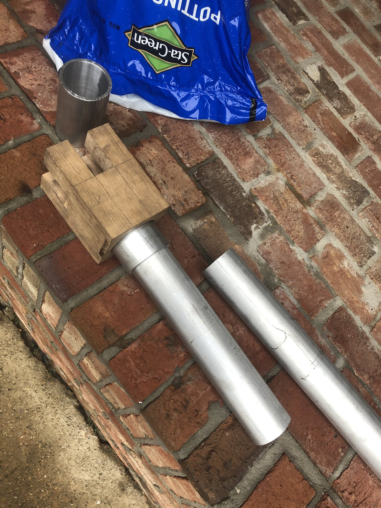
First Assembly
On 1 September 2019 the boat went together for the first time: both hulls, both beams seated on their pylons, trampoline laced and tensioned between them.
A first full assembly is a genuine engineering milestone rather than just a photograph. Every part until then had been checked against a drawing or a mockup; this is the first time all of them were checked against each other. Fit errors a drawing will happily tolerate — a pylon a few degrees off vertical, beams that do not sit parallel, a trampoline cut to a frame that turns out not to be square — only appear here.
It went together. That is the return on building the frame around loose pylons rather than measuring each hull and trusting the numbers to agree.

Worth noting from the photograph: the hulls are still open at this point. The decks would not go on for another five months, because everything that needed access to the inside of a hull had to be finished first.
Locating the Shroud Anchors
With the hulls formed and the frame built, the rig had to be stood on the actual boat to find where the shroud anchors belong. This is why the hulls stayed open so long: the anchors need backing structure bonded inside, and once a deck is on, the inside of that hull is closed forever.
Forestay first
The bow anchors were made before anything was raised. A bolt was coated in petroleum jelly as a release agent, a lag screw was set in place, and thickened epoxy was poured into a cavity in the bow and cured around it — producing an embedded fitting bonded into the structure rather than a bolt through a thin skin.
The epoxy was thickened to a consistency I would describe as ketchup rather than mayonnaise: thick enough to stay where it is put, thin enough to self-level and release trapped air. Mixed stiffer than that and you cure bubbles into a fitting that is supposed to be solid.
Then measure with the real parts
I had worked out roughly where the shroud anchors should land from shroud length, mast height, and geometry. That gives an answer, but not one worth drilling on.
So with the forestay anchors cured and holding, the mast was raised on the assembled boat — stayed temporarily with rope to the aft corners of the frame — and the shrouds pulled down to where they actually wanted to sit. Those positions were marked, Douglas fir blocks roughly 2×4 in section were bonded inside the hulls behind each, and the chainplates bolted through. The chainplates are plain plates: three bolts into the structure, one for the shroud.
Those blocks are not optional. Three bolts trying to pull through 4 mm plywood would tear out — the skin is thinner than the bolt diameter. The block spreads that load over a much larger area and gives the bolts real depth of material to bear against.
The geometry is calculable; where the wire lands relative to structure that exists is not. Whether the anchor falls on a frame you can bolt through or a bay you cannot, whether it fouls the trampoline lacing, whether the lead is fair — standing the rig up answers those directly, and confirms at the same time that the mast stands straight and the step carries the load.
Doing it at night in a backyard in December, with the boat assembled on the grass, is a fair summary of how the whole project was built.


The Decks
The decks are cedar strip-planked in alternating light and dark stock, the strips fanned and individually tapered so they converge to a point at the bow, with a dark walnut border at the edge.
There is no structural justification for this. I did it because I wanted the boat to look good, and a strip-planked deck is beautiful in a way a sheet of plywood is not. On a boat you are going to spend years building and years looking at, that is a legitimate reason, and I would rather state it than invent an engineering rationale after the fact.
The practical consequence is that strips will follow a much tighter camber than a sheet will, so the deck curve could be as tight as the aesthetics wanted. The pattern was laid out in CAD in advance, because a fanned layout has to be planned — otherwise you discover at the bow that the strips do not land where they need to.
The decks went on last, after the frame was built, the rig stood, and the shroud anchors bonded in.
What I got wrong
The strips are supported by curved formers set above the hull cross members, at roughly twelve-inch spacing.
That is too far apart, and the consequence is specific: the forward deck cannot be walked on. It is not really safe to sit on either. Press in the centre of a bay and you can hear things moving.
Twelve-inch spacing leaves each strip spanning a foot unsupported, and a thin cedar strip with 4 oz glass on one face is a shallow section over that span. In the forward section, which is not backed by the hull framing, there is nothing else carrying it. Four to six inch spacing forward would have quartered the bending stress for almost no weight.
There is a second problem underneath it: I do not know the finished thickness of the strips. They were faired and sanded to shape after gluing, and sanding to a fair curve removes whatever it removes — most at the crown, which is also where the span is longest. The thinnest material ends up in the worst place, and I cannot tell you by how much.
What actually deformed it
Over the following years the deck deformed and now needs redoing. I believe the root cause is the hulls being sealed.
The hulls have no breathing path. A sealed hull sitting in the sun heats up and pressurises; overnight it cools and pulls a vacuum. That cycle runs every day, and when the hull is under vacuum, atmospheric pressure pushes inward on every surface. The deck is the largest, thinnest, least supported panel on the boat, so it takes the most of that — and wood under sustained cyclic load creeps and takes a set rather than springing back.
Three factors, one outcome. The sealed hull applies the load. The twelve-inch spacing makes the deck vulnerable to it. And the deck's underside has no coating or glass at all, so it is a one-sided laminate with less stiffness than it could have had and an unbalanced response to moisture on top of everything else.
The rebuild
If I redo the deck — and I would like to:
- Supports at four to six inches through the unframed forward section
- Epoxy or glass the underside, making the deck a proper two-skin panel and closing off the moisture asymmetry
- Work from the centreline outward to the walnut border, so the layup stays symmetric and accumulated error lands at a trim piece that can absorb it
- Fit a breather tube in one of the pylons, so the hull can equalise continuously. A pylon is the highest point on the hull, well above spray, so it can breathe without offering water a way in. Leaving the drain plugs open works too, but only if you remember every time, and a plug at the transom is exactly where water finds you.

The Boom
The donor boat came without a boom, so this one is built rather than salvaged.
The boom is a hollow wooden spar, built from staves of alternating light and dark stock glued up around a hollow core and tapered toward each end.
The construction is a staved hollow section: individual strips milled with mating edge profiles, assembled into a closed tube, and shaped round afterward. It works because a spar in bending carries almost all its stress in the outer fibers — material at the centre of a solid section contributes weight and very little stiffness, so removing it is nearly free.
Before any glue, the whole assembly was dry-fitted and strapped to confirm the staves closed cleanly along the full length and the taper came out fair. A hollow spar glue-up is unforgiving: every joint has to close simultaneously, the epoxy is curing while you work, and there is no adjusting it once it goes off. A dry run is the only way to find a stave that will not seat before it matters.
Once shaped and faired, it was sheathed in glass and epoxy. On the hulls, sheathing is about abrasion and water. Here it is also structural: every wood fiber in a staved spar runs lengthwise, which is ideal for bending but leaves the section weak in torsion, and a sail twists its spar every time it is sheeted in. Glass wrapped around the tube contributes fibers at angles the wood does not have. It also seals the glue line between every stave, which on a hollow section are exactly the paths water would otherwise take into the core.
The alternating dark and light staves are structurally incidental and visually deliberate. It costs nothing to alternate species during layup and it turns a functional part into something worth looking at.


The Mast I Did Not Build
Originally the plan was a wooden mast. I liked the idea, and I went through the entire design process for one — section, taper, stave layout — before running a structural simulation in Fusion 360 and abandoning it.
The model returned a safety factor of about 1.7, and the critical region was in the lower mast: roughly halfway between the step and the hounds, where the shrouds and forestay anchor. That is the point furthest from any support in the panel between step and rigging, and it is where the bending moment peaks.
I decided that was not enough margin, and the reasoning was about consequence rather than the number itself. A mast failure is not a graceful one. It takes the rig down, very likely takes the arch and forward beam with it, and puts twenty-six feet of spar and wire on top of whoever is on the trampoline. On a boat with no redundancy, computed from material properties I was not fully confident in, 1.7 on that component was not a margin I wanted to sail behind.
I considered spreaders — struts pushing the shrouds outboard partway up, so the wire braces the mast against bending at mid-span, which is exactly where the problem was. They would have worked. They also introduce a point load at the spreader tip, have to be angled correctly to bisect the shroud or they shove the mast sideways instead of supporting it, and put hardware into a hollow wooden section at its highest-stress point. I did not trust my ability to detail that correctly, and a failed spreader is worse than no spreader.
So I bought a proven aluminum mast instead, and the wooden spar work went into the boom, where a failure drops the sail on your head rather than ending the boat.
Choosing not to build something is a design decision. The simulation did its job: it told me the design I wanted was marginal, and the right response to a marginal answer on a component with that failure mode is to stop.
Foils
The boat has no daggerboards or centreboards. Lateral resistance comes from the hull shape and the rudders, which is the same arrangement the Hobie 16 uses.
The rudders are second-hand Hobie blades. Before buying, a practice rudder was shaped from foam and thrown away — a rudder blade is a wing, its performance is set by section shape rather than strength, and a blade that is plenty strong but carries a lumpy asymmetric section will stall early and feel vague. Foam costs nothing, shapes in minutes, and can be cut apart to check the section, so every mistake in learning to shape a foil happens on material that does not matter.

Structural Simulation
Douglas fir was set up as a material in Fusion 360 for finite element work. The density and elastic modulus were entered correctly — 559 kg/m³ and 12.6 GPa, both good published figures.
The rest of the material card was not. Poisson's ratio sat at 1×10⁻⁴ against a real value near 0.3, and both yield strength and ultimate tensile strength sat at 1×10⁻⁵ MPa against a real tensile figure closer to 85 MPa along the grain. Those are placeholder defaults that were never overwritten.
That has a precise consequence. Deflection results from a model like this are still meaningful, because displacement under load is governed by elastic modulus and geometry, and the modulus was right. Stress results, and anything derived from them — safety factor, failure prediction — are not, because the model was told the material has essentially no strength.
There is a second limitation worth naming regardless. Wood is orthotropic: its stiffness along the grain is on the order of twenty times its stiffness across the grain, and plywood is a laminate of alternating grain directions on top of that. An isotropic material card with a single modulus cannot represent either. For comparative work — is version A stiffer than version B — that simplification is usually tolerable. For an absolute number it is not.
The Shop Constraint
The boat was built in a shared garage that had to be emptied before work could start and repacked before the end of the day. Every session began by moving cars, tools, furniture, and stored household goods out onto the driveway, and ended by putting all of it back, usually a little after dark.
A shop you set up and tear down imposes a fixed overhead on every session, independent of how much work gets done inside it. Once that overhead is high enough, short sessions stop being worth starting: an hour of available time buys no progress, because the hour is consumed by setup and teardown. Work therefore has to batch into long blocks, long blocks require daylight and free weekends, and a task representing twenty hours of actual labor spreads across months of calendar.
It also dictated where the work happened. Hull forming, sheathing, fairing, and sanding all took place in the driveway rather than the shop, partly because they needed the room and partly because the shop was frequently occupied by its normal contents.
The lesson transfers directly to professional work: fixed overhead per work session is a schedule multiplier, and it is invisible in any estimate built from task durations alone.

Thirty-One Months, Ten Months of Work
The project ran from November 2017 to June 2020. That is thirty-one months on the calendar and roughly ten months of actual working time.
The gap is school. The idea started in November 2017; it became a committed project around February 2018; and it stopped dead during every active semester after that. The long pauses in the timeline are not drift or lost motivation — they are coursework.
Stated as thirty-one months, this looks like a slow build. Stated as ten months of work spread across two and a half years of being a full-time student, with a shop that had to be emptied and repacked around every session, it is a different number entirely. Both are true; only one of them describes the engineering.
| Period | Phase |
|---|---|
| Nov 2017 – Feb 2018 | Design: adapting a 20 ft design to 16 ft |
| Apr 2018 | Plywood delivered; scarf joints; lofting and panel cutting |
| Mar 2018 | Full-length work table built; CAD modelling and panel development |
| May – Aug 2018 | Edge glue-ups, shop-built clamps, stitching preparation |
| Nov 2018 | Replacement mast collected from Galveston; rig test-raised; transom fitted |
| Oct 2018 | First hull stitched; donor Hobie 16 and trailer bought for $200 |
| Dec 2018 | Corner joint models; hull forming; first hull cracked and scrapped |
| Jan 2019 | Second hull formed — straps at closer spacing after the first failure |
| Feb – Mar 2019 | Cracking found in hull two; hulls sheathed; aluminum stock acquired; joint mockups |
| Apr – May 2019 | Third hull — new supplier, formed in one cycle on 7 May; pylon fittings made |
| Aug 2019 | Corner posts bored; beams and arch laminated; platform and trampoline assembled |
| 1 Sep 2019 | First full assembly — both hulls, frame and trampoline together |
| Nov 2019 | Pylon receivers installed and framed into the hulls |
| Dec 2019 | Rig stood 13 Dec to locate shroud anchors; boom staved, dry-fitted and glued |
| Jan 2020 | Boom completed; practice rudder shaped in foam |
| Feb – May 2020 | Decks strip-planked and sheathed; foils fitted; trailer prepared |
| 30 May 2020 | Boat complete and rigged for the first time |
| Jun 2020 | Hulls painted indoors; decks and frame varnished; hardware fitted |
| 27 Jun 2020 | Complete |
| 1 Jul 2020 | Registered, launched and sailed |
| May 2021 | Still sailing |
Finishing
The finishing order was: hulls sheathed early, decks sheathed once on, hulls painted, then decks and frame varnished together in a single campaign.
Two answers to the same problem
Epoxy has one serious weakness as an exposed finish — it is not UV stable. Left in sunlight it yellows, chalks, and eventually breaks down at the surface, taking the bond with the cloth beneath it. Any epoxy surface that will live outdoors has to be shielded from ultraviolet, and the only question is what with.
The boat answers that question twice, differently, for the same reason. On the hulls, the shield is white paint: opaque, tough, cheap to renew, and it hides the weave. On the decks and frame, where the whole point is to see the wood, the shield is a UV-filtering varnish: transparent, and sacrificial by design — it degrades in the sun instead of the epoxy, and gets recoated every year or two.
Paint where the surface has to survive; varnish where it has to be looked at; the same epoxy structure under both.
Painting indoors
The hulls were faired and painted white in a sheeted-off room inside the house — furniture covered, floor protected, hulls on sawhorses.
That looks like desperation and is actually correct. A gloss topcoat is the one coating on a boat where conditions matter more than technique, and it is ruined by three things: airborne dust settling into wet paint, temperature swings that change how the paint flows and cures, and humidity. A garage in Mississippi in June fails all three — and this one was full of sanding dust from the fairing work of the preceding weeks.
Every earlier coating job happened in a garage or driveway because those coatings were structural and their appearance did not matter. The finish coat is the one people see, so it got the best conditions available rather than the most convenient ones.
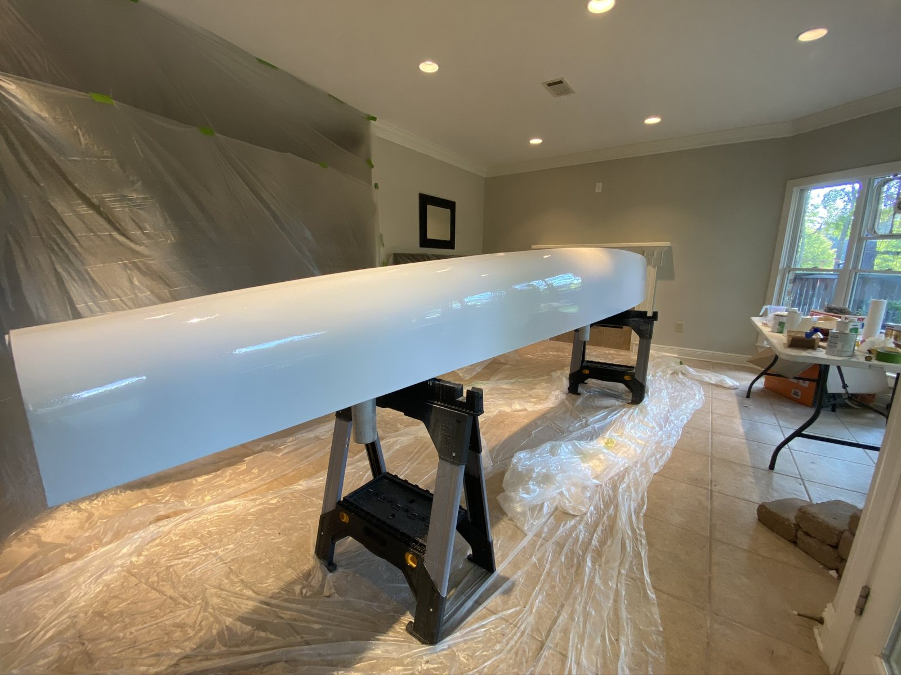
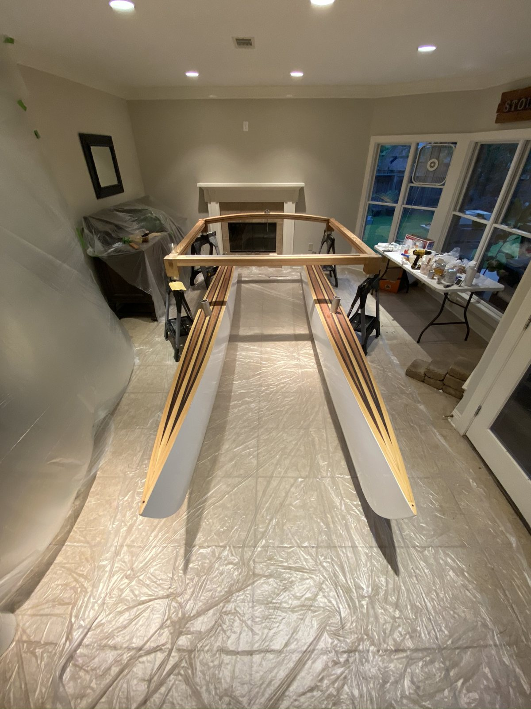


Sea Trials and Service
She sailed in July 2020, and has sailed since.
She tracks. The hulls generate enough lateral resistance without daggerboards that the boat goes where it is pointed — which is the single result that could not be verified before launch, because the hull shape came from an adapted plan and lateral area was never calculated.
She is stiff. No detectable flex, creak, or working in the beams or pylons under sail. The platform does its job.
Tacking is a challenge. This is a general 16 ft catamaran characteristic rather than a fault in this boat — two hulls give a lot of lateral resistance and no keel to pivot around, so the boat carries way through the turn and will sit head to wind if it is not driven through with speed.
I have never flown a hull. That was the original reason for building a catamaran, and I have not done it — not from nerves in general, but for a specific structural reason set out below.


The May 2021 photographs are a more meaningful structural result than the first sail. A boat that floats once has survived a day. A boat still sailing a year later has been assembled and disassembled repeatedly, trailered, rigged and de-rigged, left in the sun, and loaded onto its pylons many times over — which is the actual service life a demountable platform has to survive.
What I Would Change
All of these come from things the boat has actually done, rather than from a review of the drawings.
A forward crossbeam between the bows
The forestay pulls both bows toward the centreline, and at present nothing across the front of the boat resists that directly — the load goes back through the hulls to the platform. A beam across the bows would take it in compression, on a direct path, and stop the bow tips being drawn together.
A direct member from the shroud anchors to the pylons
This is the one that keeps me from flying a hull.
The shroud loads currently land on chainplates bolted through 4 mm plywood with a Douglas fir block behind them. That block spreads the load into the skin, which is correct as far as it goes — but the skin then has to carry it through the hull structure and into the pylons before it reaches the frame. There is no direct member from chainplate to pylon.
Fly a hull and the entire righting moment of the boat runs through that path. I know where the weak link is, so I have chosen not to load it.
A strut or tie from the shroud anchor straight to the pylon would bypass the skin entirely and put the load into the frame directly. It is the same reasoning as the tie rod in the arch: give the force a route rather than making the structure improvise one.
A walkable forward deck
Supports at four to six inches instead of twelve through the unframed forward section, and glass or epoxy on the underside. As built, the forward deck cannot take a person's weight.
Breathing for the hulls
A breather tube in one pylon, so the hulls stop pressurising and pulling a vacuum every day. I believe that cycle is the primary cause of the deck deformation.
And two smaller ones
Douglas fir lattice bulkheads instead of epoxy-coated foam. And daggerboards — not for lateral resistance, which the hulls handle, but to give the boat a pivot point to rotate around and improve the tacking behaviour.
Cost
Total project cost was approximately $4,200.
For context, that is roughly what a used Hobie 16 in reasonable condition sells for. The figure includes the scrapped first hull, plywood from two suppliers, West System resin and hardener, glass cloth, all timber, hardware, paint and varnish, the donor boat, the replacement mast, and the drive to Galveston to collect it.
Two line items are worth breaking out because they drove decisions throughout.
The donor boat cost $200 — a non-repairable Hobie 16 and its trailer — which supplied the rudders, deck hardware and road trailer. The mast, sails and standing rigging were each sourced separately second-hand, from Craigslist, a sailing forum and eBay respectively.
The plywood ran the other way: $70 per sheet, two sheets per hull, plus about $150 in shipping — roughly $300 of material per hull delivered. Losing hull one was a real fraction of the budget, and it is why the second hull was coaxed into shape over ten hours rather than abandoned.
Weight
Never measured. I can lift the assembled boat by getting under the frame and pressing up with my legs, which puts it somewhere in the region of 250–300 lb.
For comparison, a rigged Hobie 16 is about 320 lb, so the boat is in the same class or a little lighter — which is what the material choice predicted.
Registration
The boat carries a Mississippi Department of Wildlife, Fisheries and Parks registration and a state-assigned hull identification number.
A home-built boat has no manufacturer's HIN, so the number has to be applied for and issued by the state before the vessel can be registered. It is a small administrative step and a real milestone: the point at which the thing in the backyard becomes a registered vessel with a legal identity.
Detail
Not every decision was structural. A compass rose was designed as a marquetry inlay — eight points in alternating light and dark woods, cardinal letters around the rim, and coordinates engraved on the outer ring marking a specific place.
It carries no load and saves no weight. It is there because a boat you designed and built yourself gets to have something on it that exists only because you wanted it there, and because the same CAD tool used to develop hull panels will just as happily lay out a veneer pattern.

Takeaways
- A specification is only as good as the incoming inspection behind it. The plywood was ordered correctly and delivered wrong, and two hulls were built before anyone measured a ply. Verifying material against spec costs minutes; discovering the mismatch through a scrapped part costs the part.
- Where weak material sits in a section matters as much as how much of it there is. The cross-grain core failed because a thicker core reaches further from the neutral axis into higher strain, not because there was more of it.
- Choosing not to build something is a design decision. A safety factor of 1.7 on a component whose failure mode takes the whole rig down was reason enough to abandon a design I wanted and buy a proven one instead.
- Align by assembly, not by measurement. Building the frame around loose pylons and letting it set their positions removes an entire class of tolerance stack-up that measuring each hull independently would have created.
- Give loads a route or the structure will improvise one. The tie rod across the arch and the missing member between shroud anchor and pylon are the same principle — once seen working, once seen absent.
- Distribute a forming load rather than concentrating it. Straps at one-foot spacing turn point loads into something near-uniform, and every hard spot avoided is a crack that never starts.
- Change a material's properties rather than fighting them. Heat and moisture together soften plywood enough to accept a curve it would crack at cold — ten hours of forming became one.
- Prototype in cheap material, and scale prototype effort to repetition. Four identical corners justify four rounds of prototyping in a way a one-off never would; the first rudder was foam and went in the bin.
- A simulation is only as good as its material card. A correct modulus made the deflection results usable; placeholder strength values made anything derived from stress meaningless.
- A scrapped assembly can be the cheapest source of proven parts, and a mass-produced design keeps the rest available. A $200 non-repairable boat supplied the sail plan, foils, hardware and trailer; the bent mast, missing boom and dead rigging were all replaceable from second-hand listings precisely because thousands of the same boat exist.
- Fixed overhead per work session is a schedule multiplier that never appears in an estimate built from task durations alone.
- Aesthetic decisions are allowed, but they should be labelled as such. The strip-planked deck was built because I wanted it to look good, and it is the one part of the boat that has failed in service.